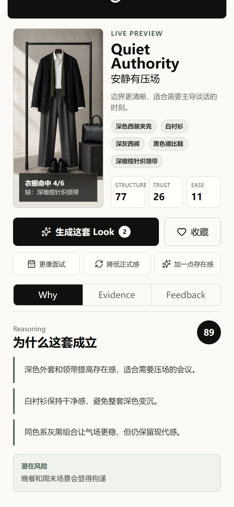
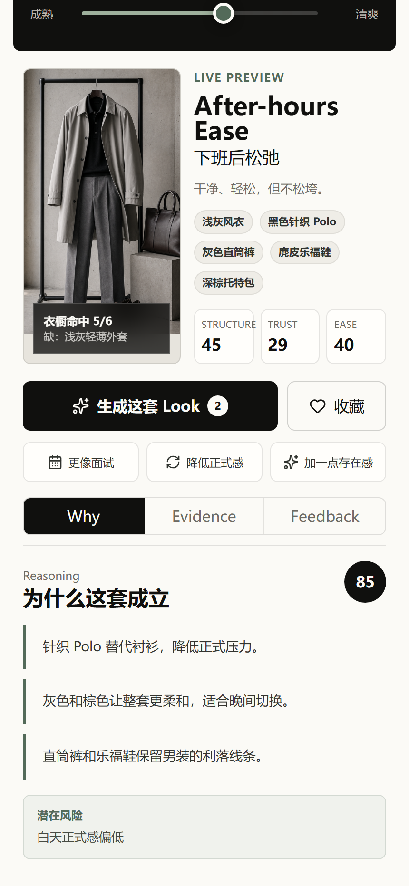

今日颜色：白、银、黄、棕、肤。
04 / prototype
新版首页：日程简报 + 三轴 Style Tuner + 实时男装预览。
首屏不再是静态结果页，而是一个可以拖动、可以调性格、可以看即时反馈的小程序操作页。
- 三条滑杆：正式度、存在感、清爽度。
- 三套 Look：Reliable Operator、Quiet Authority、After-hours Ease。
- 三层证据：Why、Evidence、Feedback。

05 / controllable output
同一天，不同状态，生成不同男装方案。


默认可信
提高存在感
降低正式度